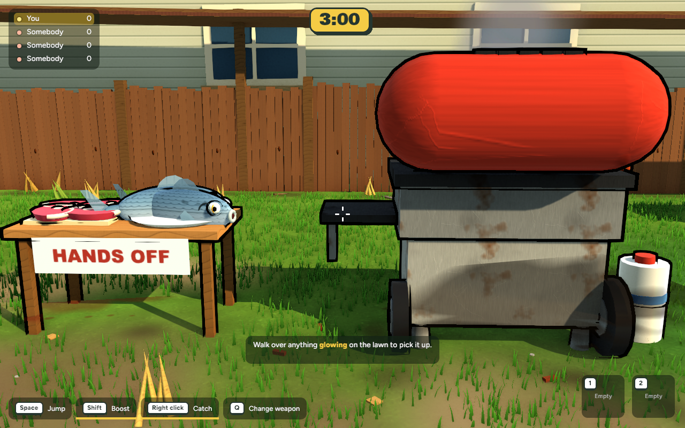

Bush Servo cooking station
Native game captures from the same player-height camera. Select a picture for the full-size view.
Smoko · from the arena
The cream dial breaks up the broad enamel hood. A painted timber apron holds the sign above the slatted shelf.
Backyard · graphics finishing pass
This earlier comparison closes the BBQ view in the E19.3 pack. The camera, scene, resolution and simulation step match. The grill and prep table retain their original appearance through that pass.
 Starting revision · 40f20b6
Starting revision · 40f20b6
Published source · ac513c9Capture settings, measurements and recovery